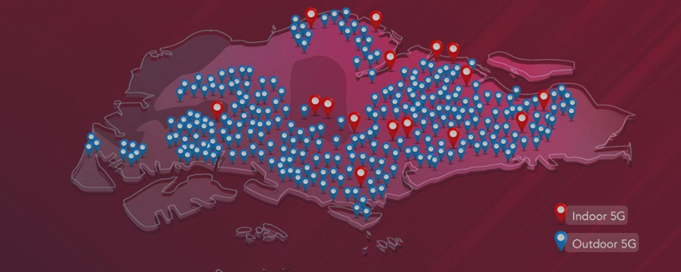

Current Developments and Future Directions

As mobile internet access grew in importance, the government rolled out Wireless@SG in 2007, a nationwide initiative to provide high-speed wireless connectivity. Over time, the programme was upgraded with faster speeds and easier logins—whether through SIM card authentication or the Wireless@SG app. Today, more than 6,500 hotspots span the island, covering everyday spaces like shopping malls, schools, hospitals, MRT stations, hawker centres, and community centres—making free Wi-Fi part of daily life in Singapore. Fibre broadband, Singapore’s current network backbone, achieved nationwide coverage in 2013, marked by the rollout of the now-familiar bright yellow optical fibre cables to homes and businesses across the island. By the end of 2025, Singapore has achieved its goal of nationwide 5G coverage.(Source: History of internet in Singapore)
The Road Ahead
Singapore’s Digital Connectivity Blueprint sets out a bold agenda to secure the nation’s position as a global digital leader. Over the next decade, Singapore plans to double its submarine cable landings to strengthen international data infrastructure, while achieving seamless end-to-end 10 Gbps nationwide connectivity within five years to ensure ultra-fast and reliable access islandwide. At the same time, the blueprint emphasizes strengthening digital resilience and cybersecurity, expanding the use of green data centres, and driving wider adoption of the Singapore Digital Utility Stack to enable smoother digital transactions. Looking further ahead, Singapore also aims to lead in frontier technologies such as quantum-safe systems, autonomous networks, green software, and Low Earth Orbit (LEO) satellite services.
Launched in October 2024, Smart Nation 2.0 builds on the original 2014 vision and sharpens Singapore’s digital strategy around three core pillars: Trust, Growth, and Community. The initiative seeks to strengthen cybersecurity and public confidence, accelerate technological progress in areas such as transport, data centres, and digital services, and promote greater community engagement by fostering digital inclusion and continuous innovation.
Singapore is stepping up its game with new digital services and infrastructure to strengthen its role as a global innovation hub. One standout project is Virtual Singapore—a 3D digital twin of the entire country that uses real-time data and geospatial insights to help with urban planning, environmental monitoring, and even testing smart city solutions. On top of that, tech giants are investing heavily in Singapore’s future: Amazon Web Services (AWS) is pumping in S$12 billion (US$8.9 billion) through 2028 to grow its cloud infrastructure here, cementing the nation’s place as a regional hub for AI and digital services. At the same time, new submarine fibre-optic cable projects, including partnerships between Singapore’s Keppel and Vietnam’s Sovico, are being explored to keep up with rising demand for data—especially as AI and data centres continue to expand rapidly.
As one of Asia’s frontrunners in digital transformation, Singapore continues to push forward with innovations in AI, machine learning, cloud-first strategies, edge computing, cybersecurity, sustainability, and digital skills development. Government initiatives like Smart Nation and enterprise-level digitalization efforts have significantly boosted the digital economy, which now makes up a major share of Singapore’s overall growth. With strong infrastructure, pro-business policies, and a focus on upskilling, Singapore is set to remain a leader in shaping the region’s digital economy in the years ahead.
(Source: TechSci Research, GovTech, Wikipedia, Reuters, Trade.gov)